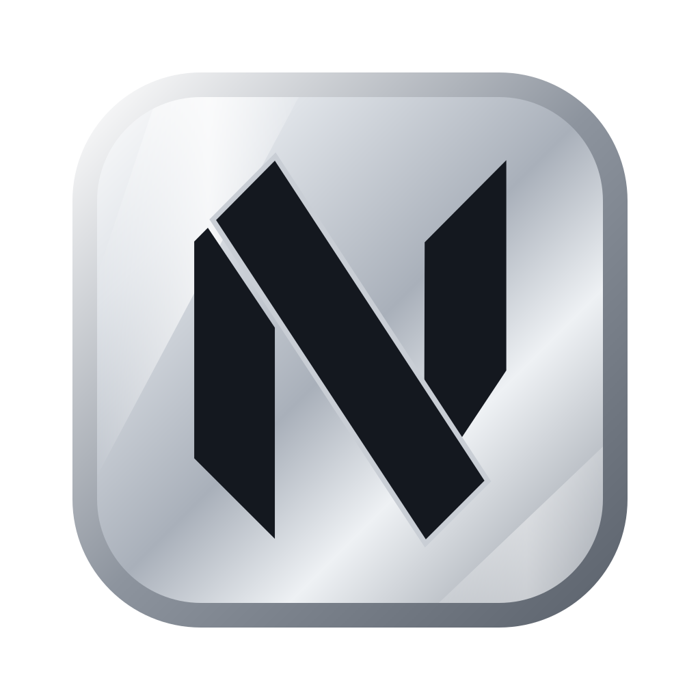

AgVim
A free, open source Neovim workspace for Mac that makes agentic coding easy.
Big IDEs like VS Code were built for people typing every line. Now that agents can do so much of that, most of an IDE just gets in the way. What's left to do is read code, review changes and keep your agents organised, and that only takes something simple.
AgVim gives each project its own tab, with full-screen tabs inside for Neovim, lazygit, shells and coding agents, one click apart. It works with Claude, Codex, Copilot, Gemini, DeepSeek, OpenCode and more; you install the ones you use. Close a project and everything in it stops, freeing the memory. Open it again and your tabs come back, and agents that can resume continue their last conversation.
As you type, AI suggestions appear and Tab accepts them. That's free through Copilot's free tier with a GitHub account, or use your own key for Claude, OpenAI, Gemini, DeepSeek and many others.
Install
In a terminal:
curl -fsSL https://raw.githubusercontent.com/robertsolves/agvim/main/install.sh | bashOr download the app, drag it to Applications and open it:
Either way it sets up what's missing once, then opens in kitty. macOS may ask you to allow the app in System Settings → Privacy & Security → Open Anyway.
Questions
What is AgVim?
AgVim is a free, open source Neovim workspace for Mac, built for agentic coding. Each project gets its own tab, holding full-screen tabs for Neovim, lazygit, shells and coding agents.
Is AgVim free?
Yes. AgVim is free and open source under the MIT License. AI suggestions are free through GitHub Copilot's free tier with a GitHub account. If you add your own API key, that service may charge you for what you use.
Which coding agents does AgVim work with?
AgVim has shortcuts for Claude Code, Codex, Copilot, Gemini, DeepSeek TUI, OpenCode, Kilo, Freebuff, Cursor, Aider, Amp and Qwen. You install the agents you want to use.
Does AgVim work on Windows or Linux?
No. AgVim is macOS only.
Do I need to install Neovim or tmux first?
No. Setup installs what's missing once, including Homebrew, kitty, git, Neovim, tmux and lazygit. Tools you already have are kept and updated to their latest versions.
What happens when I close a project?
Its tabs are saved and everything running in them stops, which frees the memory. When you open it again, the tabs come back, and agents with a resume command continue their last conversation. Other programs, such as dev servers, come back as a shell for you to restart.
How does AgVim update?
It checks for a new release each time it opens and updates itself before starting. Offline, it opens the version you have after a few seconds at most. You can turn this off with agvim autoupdate off.
Learn more
Built on
- Neovim
- NvChad
- tmux
- lazygit
- kitty
- Homebrew
- Git
- fzf
- fd
- ripgrep
- Tree-sitter
- Node.js
- Python
- ImageMagick
- librsvg
- xcode-build-server
- Nerd Fonts
Neovim plugins
- lazy.nvim
- mason.nvim
- copilot.lua
- minuet-ai.nvim
- mason-tool-installer
- nvim-lspconfig
- nvim-treesitter
- nvim-tree
- diffview.nvim
- claudecode.nvim
- flutter-tools.nvim
- rustaceanvim
- crates.nvim
- nvim-dap
- nvim-dap-ui
- conform.nvim
- trouble.nvim
- snacks.nvim
- todo-comments.nvim
- grug-far.nvim
- auto-save.nvim
- vim-tmux-navigator
- rainbow-delimiters
- live-preview.nvim